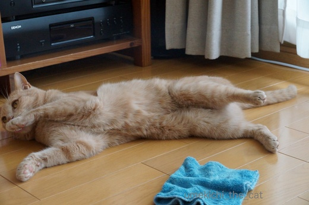
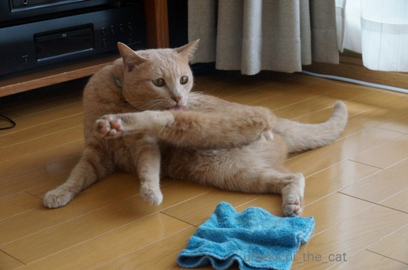
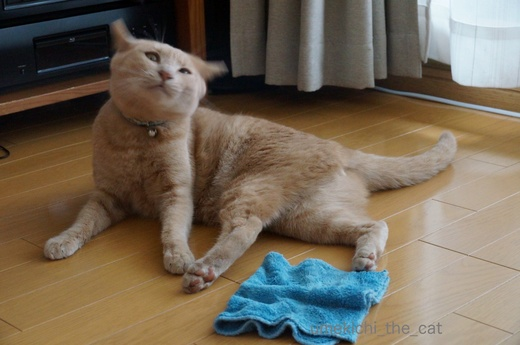

拭き掃除が好き！ [梅吉]
・・・・ってもちろん私ではありません。

フローリングを水拭きしていると必ず走ってやってくる梅吉さん。

拭いたばかりのまだちょっと湿っているところに
ずさささささーっとスライディング。
フローリングに湿り気があるから真新しい肉球印がくっきりてんてんと・・・ああ(꒦ິ⌑꒦ີ)

自分の足が濡れているとスライディングはさらに激しくなり興奮して転げ回ります。
足、洗面所でわざと濡らしてくるんですよ〜。
せっかく拭いたフローリングは濡れた足でびしょびしょです・・・ああ(꒦ິ⌑꒦ີ)

ぶるるんっと身震いをしてたくさん毛を落としてくれました。
湿ったフローリングに抜け毛・・・また拭き直しです・・・うわ〜ん(꒦ິ⌑꒦ີ)
窓拭き、床拭きキライです。
暑くなってきたら汗だくだくの作業になるので尚更です。
でも梅吉さんはせっせと汚しておかーさんが掃除しなければならない様に仕向けるのでした。
ベランダに出してもらってご機嫌梅吉。
週末は風が気持ちよかったねー。

カフェオレ色の梅吉

梅吉 2023年8月10日 永眠


梅吉と出会った譲渡会

犬猫の理由なき殺処分ゼロ
妄想広告
UMEKICHI 光

爆発的に早い！
時々攻撃的！
Thanks to Mr.Boss365
爆発的に早い！
時々攻撃的！
Thanks to Mr.Boss365

お疲れ様 梅吉さんもごくろう様
窓拭き＆床拭き しんどいわ(笑)
スピン君の息で窓が驚くほど汚れる(T_T)
ほんと風が心地よかったですね ベランダの植物シマトリネコ？グリーンがステキ
by みいこ (2017-05-29 08:18)
梅吉さん、スライディングってw
それもわざわざ自分の足を濡らしてって遊びに手を抜きませんねぇw
窓拭き＆床拭き、出来れば最短で終わらせたいのに、
梅吉さんの努力で半永遠に続いちゃうんですね(⌒-⌒; )
ちぃさん様、本当にお疲れ様です(_ _)
by ニッキー (2017-05-29 08:43)
ちゃんと水拭きして偉いですよー！
わたしなんてたまにクイックルワイパーで適当に撫でるだけ(笑)
湿ったフローリングに抜け毛は想像できますｗｗ
おつかれさまです^^
by リュカ (2017-05-29 09:53)
梅吉さん♪ ご機嫌でスライディング(#^.^#)
この可愛さで許してあげたいところですが
時間は倍以上かかりそうですね！
わざわざあんよを濡らしてくるなんて
遊びにぬかりがありません♪
by きぃ (2017-05-29 11:43)
コレわかります~。うちの床はいつも肉球柄。窓も肉球スタンプ模様。風呂場で足を濡らして歩きまわる ~。梅吉さんはスライディングごっこも!
こうなると笑うしかありませんね!。「おかーさん そんな一所懸命掃除せんでええやん。一緒に遊ぼ」って言ってますね。
素敵なベランダでちょっと息抜きいいですねっ!
by zombiekong (2017-05-29 12:36)
お掃除えらいですね＾＾
梅吉さんはちぃさんのまねっこしてるのかも？
床はモップ使ったら楽になりますよー
by じゅらまろ (2017-05-29 12:44)
邪魔してくる梅吉さんでも好きだわ～
笑いながら掃除再開しちゃいそう(^-^)
うちのはモップにならないから寂しい。。。
by muku (2017-05-29 12:49)
うちはスライディングスペースが無いので、その分カーペットにゴロゴロして毛をまき散らしてました(^^;)
それをコロコロで取るとまた転がる・・・の繰り返しでした。
仕事増やしてくれますよね^^;
by kou (2017-05-29 13:14)
分かります。これもネコ効果のひとつですね～！飼いだしてから床を拭く機会が格段に増えました。きれいになるからいっか～(*´▽｀*)
by palpal (2017-05-29 14:29)
梅吉さん。
自分のふわふわボディで、モップになりきり・お手伝い？
それとも、おかーさんの運動（床拭き）促進委員会・会長さんとか？？ｗ
それにしても、お腹おっぴろげポーズ、かわいいゾ！！
モフモフ♡ これは、もふらずにいられないなぁ(^^♪
by morichan (2017-05-29 15:01)
湿った床にスライディング！！
きゃ～猫毛がしっかり床にへばりついて取れない、取れない(ーー;)
私も掃除の中で拭き掃除が一番面倒。
こてつと暮らす前は汚れなければしない主義でした^^;
今は「こてつの肉球が汚れるとかわいそうだから」という理由でせっせと吹いております(*^▽^*)
by ゆきち (2017-05-29 21:06)
大変ですね～。ご苦労様です。m(_ _)m
でも梅吉さん、すごく楽しそう♪ ^^;
by yes_hama (2017-05-29 21:22)
写真見て「何事〜」って言ってしまいましたよ（笑）
そういうお手伝いがあったのですね〜
感心感心、下僕殿の仕事を増やしてご満悦な梅吉さんです。
何しろ、拭き掃除はダイエットに一番良いそうです。
私も拭き掃除は気が向いたときにしかしません（笑）
by kiki (2017-05-29 21:56)
なんて楽しそうな写真♪
え、わざわざ足を濡らしてくる？！ それはすごい～楽しみ方半端ないですね。
お掃除お疲れ様です＾＾；
by sana (2017-05-29 23:30)
洗面所で足を濡らしてまで参加する梅吉さん(=_=)
でもなんだか楽しそうな雰囲気が伝わってきますね～。
それにしても、素敵なベランダ！オシャレなベランダで日向ぼっこ？梅吉さん幸せねぇ(^-^)
by ミミハナ (2017-05-30 08:47)
ネバーエンディングおそーうじーーー♬…リマールもビックリですね！
ちぃさんちはもとから綺麗そうなのに、梅吉君のお陰で毛と肉球跡がついて、なんだか掃除してるんだかわざわざ仕事作ってるんだか´д` ;
梅吉君はモップとしてお手伝いしてるつもりかしら？吉本新喜劇のネタになるかもよ^_−☆！(ウレシクナイかしら…
by BillK-ko (2017-05-30 20:58)
みいこさん＞みいこさん家はにゃんずさんじゃなくてスピンくんが
お手伝い（笑）してくれるのね〜ww
暑くなって「ハァハァ」が激しくなると更に汚れちゃうのかしら(＠◇＠)
ここ２〜３日はまたじっとり暑い・・・・先週末が恋しいよ〜。
ベランダにに見えている鉢植えはジューンベリーと娑羅樹（ナツツバキ）です。
遠くに見えているのは神社のクスノキ。借景、やった〜＾＾
ニッキーさん＞得意なのはヘッドスライディングです！
「そんなことしたら怪我するよ〜！」と野球界の大御所に叱られそう・・・
が、受け身も得意なので痛くない姿勢とってます。
これは柔道界の重鎮に褒められそうです＾＾
私のお掃除のテーマ曲は「Never Ending Story」
ファルコンが飛びますよ〜(･◇･)
リュカさん＞あ、その手があった！！
でもすごく梅吉に飛びつかれそうなんですけどww
梅吉付きフロアワイパーで二の腕のシェイプアップになるか
たくましくなるか・・・ヾ(*ΦωΦ)ﾉ
きぃさん＞かわいい、面白い、写真撮影で
倍どころか３倍の時間がかかっていますよ〜Ｏ(≧▽≦)Ｏ
でも、梅吉が楽しそうだからいいか〜って＾＾
zombiekongさん＞本当に！目の前に走ってきてずさささささ〜っと
スライディングからの雑巾にじゃれつく・・・・
もうおかしくて、面白くて私の雑巾を動かす手の動きも高速になります＾＾
お掃除にかこつけて一緒に遊んでいる様なものかも知れませんww
じゅらまろさん＞リアルモップなんだか梅吉モップなんだか
分からなくなりそうだけど面白そう！
mukuさん＞笑って掃除にならないところが本当です^^;
ムクさんは肩に止まってお掃除応援してくれそう！！
kouさん＞あ〜〜っ、カーペットに絡んだ毛はなかなか取れないですよね^^;
コロコロのテープがいくらあっても足りないかも〜。
仕事を増やすのが務め、と自負している梅吉です( ꒪ω꒪)
by ちぃ (2017-05-31 08:38)
「ボクはママのお手伝いしているんだけどな～!」by 梅吉(^^
by makkun (2017-05-31 12:02)
すごーい、賢いお子だ！あんよ濡らして、ママと遊ぶ気まんまんなのねー♪
元気な男の子の育児って、やっぱり体力いるのですねー。カワイイから許す！
(≡^∇^≡)ﾆｬﾊﾊ
by Ginger (2017-05-31 12:31)
palpalさん＞そうそう！いつ誰がきても大丈夫！！
掃除できてなくても「猫がいるからさ〜」で言い訳できるので便利！！
猫効果、最強＾＾
morichanさん＞どちらにしても梅吉には全く悪気はないということですね！！
梅吉の汚れのないつぶらな瞳の意味がmorichanさんのコメントで
ようやく理解できました〜。う〜め〜き〜ちぃ〜(꒦ິ⌑꒦ີ)
梅吉がぶるるんっとした後に私がもふもふもふもふ・・・
余計に抜け毛が落ちたのは内緒ですww
ゆきちさん＞これからのジメジメ季節
へばりつきは更に酷くなりそうですよね( ；∀；)
あとはもう見ないふりしかありません！
「肉球が汚れるとかわいそう・・・」
あああ〜、まだその境地には至って居りません！！
yes_hamaさん＞あまりにアホみたいに楽しそうなので
見ているこちらもつい一緒に遊んでしまいます^^;
そしていつまでも終わらない掃除・・・・
kikiさん＞日々「サボらないように！」と梅吉のありがたい教えを受けております。
ただ、拭き掃除は達成感もあり、汗をかくと喉がかわく、
ビール！orアイスクリーム！となり私に限ってはダイエットにならない様です^^;
sanaさん＞お風呂上がり等「わしのあし、しめってるわ！」と気づくと
拭き掃除をしていなくてもスライディング遊びが始まることがあります。
湿った足＝楽しい遊び、は完全に理解してる様ですよ〜。
賢い！と褒めたいところですが、倍くらいの迷惑！！が帰ってくるので
褒めてあげない(^_－)☆
ミミハハさん＞ね〜。どこでそんなこと覚えたのよ〜！＾＾
楽しそうな雰囲気出てますか？嬉しい！！
寝転がっている梅吉の横に雑巾置いただけの様にも見えるな・・・
と密かに心配していました。
ベランダはちょうど日の差す角度も良かったのかな？
「もでるがふんいきあげとるんやで」とは梅吉の談(･◇･)
BillK-koさん＞なぜ私のお掃除のテーマソングをご存知なのですか〜(｣ﾟﾛﾟ)｣
毎日歌いながらがんばってます！
梅吉が新喜劇に！？初の猫座長の持ちネタ「モップ芸」(≧艸≦*)
「わし、ねこですねん」が決め台詞かな〜。
makkunさん＞あ、だからお掃除終わりにカリカリをねだられるんですね！
お手伝いのお駄賃だったんだ・・・・不思議が一つ解けました(≧▽≦)
Gingerさん＞「梅吉、やめてよ〜」と言いながらニヤニヤする私の姿
もしかして見えていましたか？
本当に元気な梅吉は毛皮に覆われていなかったら
身体中青あざだらけなんじゃないかな・・・と思っています。
夢中になってあちこちぶつかる、高いところから飛び降りる・・・
おかーさんもおんなじことして！と言われなくて良かったデス＾＾
by ちぃ (2017-05-31 14:21)